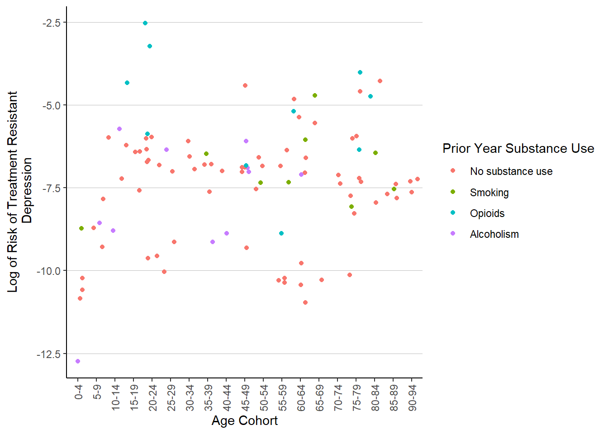
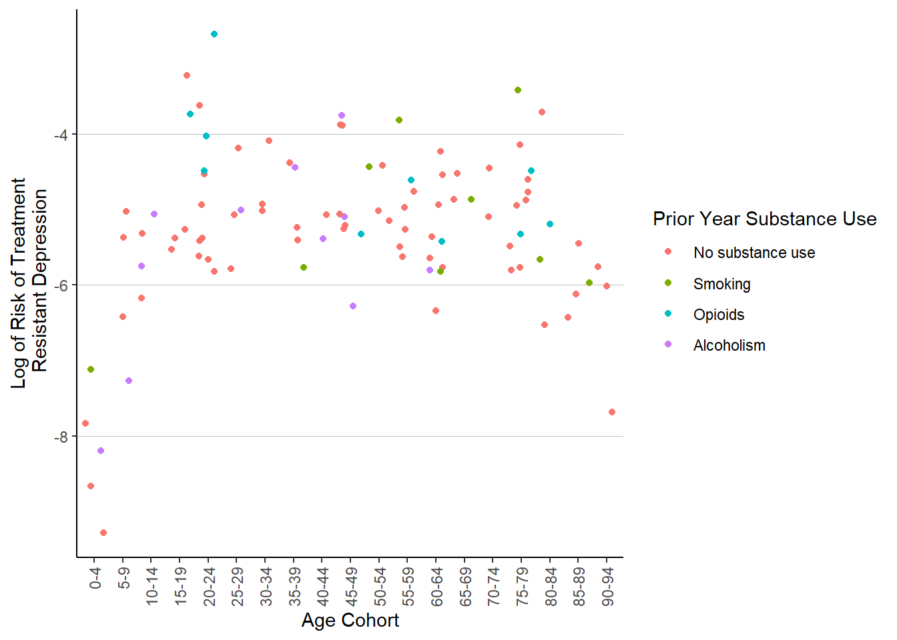

library(tidytuesdayR)
tuesdata <- tt_load(2023, week = 43)
Downloading file 1 of 1: `patient_risk_profiles.csv`Aidan Berg
October 24, 2023
After a long while of trying to explain exactly what I do to curious family and friends, I have decided to start up a data science blog, to replace my old professional website, and to maybe develop a bit of a portfolio of my work. Since I am a dedicated useR, and have always wanted to be involved in the R community, I decided to jump into #TidyTuesday as my first post! I won’t waste any more time and import the dataset.
Downloading file 1 of 1: `patient_risk_profiles.csv`# A tibble: 6 × 100
personId `age group: 10 - 14` `age group: 15 - 19` `age group: 20 - 24`
<dbl> <dbl> <dbl> <dbl>
1 1 0 0 0
2 2 0 0 0
3 3 0 0 0
4 4 0 0 0
5 5 0 0 0
6 6 0 0 0
# ℹ 96 more variables: `age group: 65 - 69` <dbl>,
# `age group: 40 - 44` <dbl>, `age group: 45 - 49` <dbl>,
# `age group: 55 - 59` <dbl>, `age group: 85 - 89` <dbl>,
# `age group: 75 - 79` <dbl>, `age group: 5 - 9` <dbl>,
# `age group: 25 - 29` <dbl>, `age group: 0 - 4` <dbl>,
# `age group: 70 - 74` <dbl>, `age group: 50 - 54` <dbl>,
# `age group: 60 - 64` <dbl>, `age group: 35 - 39` <dbl>, …Luckily for me, it seems that I’ve gotten the best dataset an epidemiologist could ask for – health data! More specifically, it is “100 simulated patient’s medical history features and the predicted 1-year risk of 14 outcomes based on each patient’s medical history features”, per the tidytuesday repo
It also seems that the R/Pharma Conference opted to send in a slightly messy dataset. This shouldn’t be problem, I tend to enjoy the data cleaning process1, it’s like a form of spreadsheet kintsugi, where I can make a broken dataset more beautiful and informative. Looking to the actual dataset, it seems we have 100 variables, which have some unconventional names. Additionally, age group is spread out over 19 columns, which are slightly out of order. I’ll start by trimming the age group columns into one ordered factor variable using case_when() from dplyr and some of the forcats functions, then I’ll chip away at the column names.
library(tidyverse)
patient_risk_profiles <- patient_risk_profiles %>%
mutate(age_group = case_when(
`age group: 0 - 4` == 1 ~ "0-4",
`age group: 5 - 9` == 1 ~ "5-9",
`age group: 10 - 14` == 1 ~ "10-14",
`age group: 15 - 19` == 1 ~ "15-19",
`age group: 20 - 24` == 1 ~ "20-24",
`age group: 25 - 29` == 1 ~ "25-29",
`age group: 30 - 34` == 1 ~ "30-34",
`age group: 35 - 39` == 1 ~ "35-39",
`age group: 40 - 44` == 1 ~ "40-44",
`age group: 45 - 49` == 1 ~ "45-49",
`age group: 50 - 54` == 1 ~ "50-54",
`age group: 55 - 59` == 1 ~ "55-59",
`age group: 60 - 64` == 1 ~ "60-64",
`age group: 65 - 69` == 1 ~ "65-69",
`age group: 70 - 74` == 1 ~ "70-74",
`age group: 75 - 79` == 1 ~ "75-79",
`age group: 80 - 84` == 1 ~ "80-84",
`age group: 85 - 89` == 1 ~ "85-89",
`age group: 90 - 94` == 1 ~ "90-94"
))
patient_risk_profiles$age_group <- patient_risk_profiles$age_group %>%
as_factor() # now convert to factor
levels(patient_risk_profiles$age_group) # check levels [1] "5-9" "80-84" "45-49" "30-34" "60-64" "75-79" "15-19" "65-69" "55-59"
[10] "35-39" "10-14" "20-24" "0-4" "40-44" "25-29" "70-74" "90-94" "50-54"
[19] "85-89"patient_risk_profiles$age_group <- patient_risk_profiles$age_group %>%
fct_relevel("0-4", "5-9", "10-14", "15-19", "20-24", "25-29", # manually fix
"30-34", "35-39", "40-44", "45-49", "50-54", "55-59",
"60-64", "65-69", "70-74", "75-79", "80-84", "85-89",
"90-94")
levels(patient_risk_profiles$age_group) # fixed! [1] "0-4" "5-9" "10-14" "15-19" "20-24" "25-29" "30-34" "35-39" "40-44"
[10] "45-49" "50-54" "55-59" "60-64" "65-69" "70-74" "75-79" "80-84" "85-89"
[19] "90-94"Okay, things are already looking better! It was a bit tedious to reorder the age groups, but there are 18 fewer columns to deal with. Next, I’m just going to drop the Sex = MALE column – most datasets I’ve seen just use one column for sex assigned at birth. Then, I am going to cut down the variable names to shorthand, before tossing them into janitor to force all column names to snake case. I’m also removing the word predicted from the predicted risk variables. This is because the word ‘risk’, to me, already implies a prediction. The same goes for the string “Occurrence of”. Also, I just now noticed that the variables which should be simple 0-1 factors are in fact coded as integers. I will fix this as well.
patient_risk_profiles <- patient_risk_profiles %>%
select(!`Sex = MALE`) %>%
rename(sex = `Sex = FEMALE`)
# while we're here, sex should really be a factor
patient_risk_profiles$sex <- patient_risk_profiles$sex %>%
factor(levels = c(0, 1),
labels = c("Male", "Female"))
library(janitor)
Attaching package: 'janitor'The following objects are masked from 'package:stats':
chisq.test, fisher.test# names to shorthand
patient_risk_profiles <- patient_risk_profiles %>%
rename_with(~str_replace(.," in ","_")) %>%
rename_with(~str_remove(., " at ")) %>%
rename_with(~str_remove(., "predicted ")) %>%
rename_with(~str_remove(., "Occurrence of ")) %>%
clean_names()
# I'm sure someone is wincing because I couldn't figure out how to use one
# rename_with command. This is entirely fair.
patient_risk_profiles <- patient_risk_profiles %>%
mutate(
across(
acetaminophen_exposures_prior_year:antibiotics_tetracyclines_prior_year,
as.factor
))
head(patient_risk_profiles)# A tibble: 6 × 81
person_id sex acetaminophen_exposu…¹ alcoholism_prior_year anemia_prior_year
<dbl> <fct> <fct> <fct> <fct>
1 1 Fema… 1 0 0
2 2 Male 0 0 0
3 3 Male 0 0 0
4 4 Male 0 0 0
5 5 Fema… 0 0 1
6 6 Male 0 0 0
# ℹ abbreviated name: ¹acetaminophen_exposures_prior_year
# ℹ 76 more variables: angina_events_prior_year <fct>,
# antiepileptics_prior_year <fct>, anxiety_prior_year <fct>,
# osteoarthritis_prior_year <fct>, aspirin_exposures_prior_year <fct>,
# asthma_prior_year <fct>, atrial_fibrillation_incident_prior_year <fct>,
# hormonal_contraceptives_prior_year <fct>,
# any_cancer_excl_prostate_cancer_and_benign_cancer_prior_year <fct>, …These names are still not perfect2. However, most of the common patterns of messy name have been stamped out, and future fixes will occur on a case-by-case basis. I also made sure to retain the prior_year portion of each column name where it occured, because without it, it may be difficult to figure out which variable is which.
Yes, this is a bit lazy, but with 81 columns to manually fix, I think I’ll turn to analysis. This dataset so far has given me a warm sense of nostalgia for my biostatistics classes in graduate school, even down to a logistic regression output! Back then I was using STATA as my analysis software of choice3, which was fun, but never had the suite of data visualization tools that drew me into R in the first place. Furthermore, I have pivoted my research to explore substance use disorder, and there are a few variables which I can use to explore some association. We have a variable for past-year alcoholism, opioids and smoking4, all of which I research on a daily basis! I think it could be interesting to see how well past-year substance use5 correlates with risk of a few of the health conditions given in the dataset, controlling for age, since we spent so long creating an age variable. For this, I’ll need to coalesce substance use into one variable (mostly to lump together cases where a patient had multiple instances of substance abuse), then create my visualizations.
patient_risk_profiles <- patient_risk_profiles %>%
mutate(substance_use_prior_year = case_when(
opioids_prior_year == 0 &
alcoholism_prior_year == 0 &
smoking_prior_year == 0
~ "No substance use",
opioids_prior_year == 1 ~ "Opioids",
alcoholism_prior_year == 1 ~ "Alcoholism",
smoking_prior_year == 1 ~ "Smoking",
.default = "Multiple substance use"
# lump patients with multiple instances of prior year
)) # use into 'other'
patient_risk_profiles$substance_use_prior_year <-
patient_risk_profiles$substance_use_prior_year %>%
as_factor()
ggplot(patient_risk_profiles) +
geom_jitter(aes(x = age_group,
y = risk_of_dementia,
color = age_group)) +
labs(x = "Age Group",
y = "Dementia Risk") +
theme(legend.position = "none",
axis.text.x = element_text(angle = 90, hjust = 1, vjust = .5)) +
facet_wrap(vars(substance_use_prior_year)) +
theme(axis.text.x = element_text(angle = 90, hjust = 1, vjust = .5),
legend.key = element_blank(),
panel.background = element_blank(),
panel.grid = element_blank(),
panel.grid.major.y = element_line(colour = "gray", linewidth = .25),
axis.line = element_line(color = "black")) These charts do not seem to tell us much, except that it seems that age is (seemingly) exponentially associated with dementia risk; while certainly interesting, it is not an unusual correlation to find. Furthermore, it seems that the sample sizes are too small to make any meaningful conjectures about any subpopulation besides the population which did not have prior year smoking, alcoholism, or opioid use. Let’s try another angle then – maybe a different chart will help. Let’s take a look at depression risk, since mental health and substance use are frequently intertwined. I will also take the log of the risk to see things more clearly.
ggplot(patient_risk_profiles) +
geom_jitter(aes(x = age_group,
y = log(risk_of_treatment_resistant_depression_trd),
color = substance_use_prior_year)) +
labs(x = "Age Cohort",
y = "Log of Risk of Treatment Resistant\n Depression") +
guides(color = guide_legend(title = "Prior Year Substance Use")) +
theme(axis.text.x = element_text(angle = 90, hjust = 1, vjust = .5),
legend.key = element_blank(),
panel.background = element_blank(),
panel.grid = element_blank(),
panel.grid.major.y = element_line(colour = "gray", size = .25),
axis.line = element_line(color = "black"))Warning: The `size` argument of `element_line()` is deprecated as of ggplot2 3.4.0.
ℹ Please use the `linewidth` argument instead.
Another swing, another messy scatter plot. There are some prior year opioid users who have elevated risk of TRD in the range of 20-24, but these three don’t quite represent an association. I’ll try one more time, with migraine risk.
ggplot(patient_risk_profiles) +
geom_jitter(aes(x = age_group,
y = log(risk_of_migraine),
color = substance_use_prior_year)) +
labs(x = "Age Cohort",
y = "Log of Risk of Treatment\n Resistant Depression") +
guides(color = guide_legend(title = "Prior Year Substance Use")) +
theme(axis.text.x = element_text(angle = 90, hjust = 1, vjust = .5),
legend.key = element_blank(),
panel.background = element_blank(),
panel.grid = element_blank(),
panel.grid.major.y = element_line(colour = "gray", size = .25),
axis.line = element_line(color = "black"))
And another messy scatterplot6. I think I will call it here. While I could easily spend hours working backwards to derive the models used in the dataset to generate the risk profiles for each simulated patient, setting up logistic regressions of my own, calculating risk rations7 I do already spend much of my day coding with data that is extremely similar to this, so I’ll spare myself some work-outside-of-work. Still, I had quite a bit of fun exploring some of the forcats functions and working with the column strings – time is never wasted learning how to clean up a dataset. I’ve also been exploring the more powerful aspects of ggplot2, as you can see with the charts edited to look a bit less like default ggplot output.
I will try to participate in #TidyTuesday every few weeks or so; it’s nice to use RStudio outside of a work setting, and I feel like the practice is invaluable. See you around!
The album I chose to scrub this dataset to was Disco Volador, by the Orielles.
Thank goodness↩︎
In particular, both columns I called in the last mutate function are especially horrid, but I don’t want to take away the antibiotics string because otherwise it’s a useful landmark when navigating the dataset, similar to risk and prior_year.↩︎
And by my choice, I mean per the syllabus.↩︎
And steroids, however, I am more familiar with the effects of those I’ve mentioned, so I’ll leave steroids be for now.↩︎
Alcoholism will have to serve as a proxy for heavy drinking – this isn’t quite accurate, but for now I’m just chumming the waters.↩︎
Although the parabola formed with risk of depression raising during adulthood and dropping in childhood and old age is quite interesting…↩︎
finding AIC and BIC for each model, plotting logistic regression outputs, deriving risk ratios, comparing my models to the risk profiles provided…↩︎